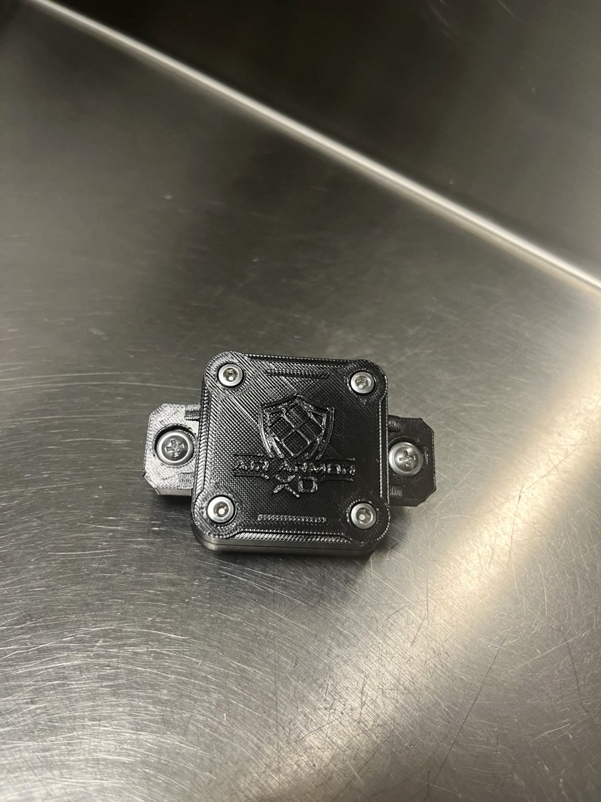
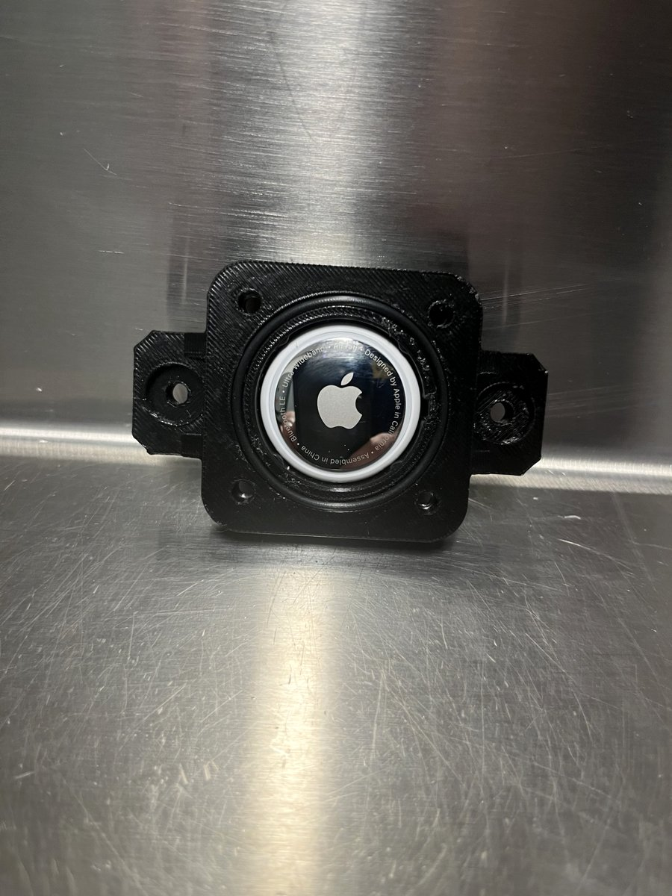
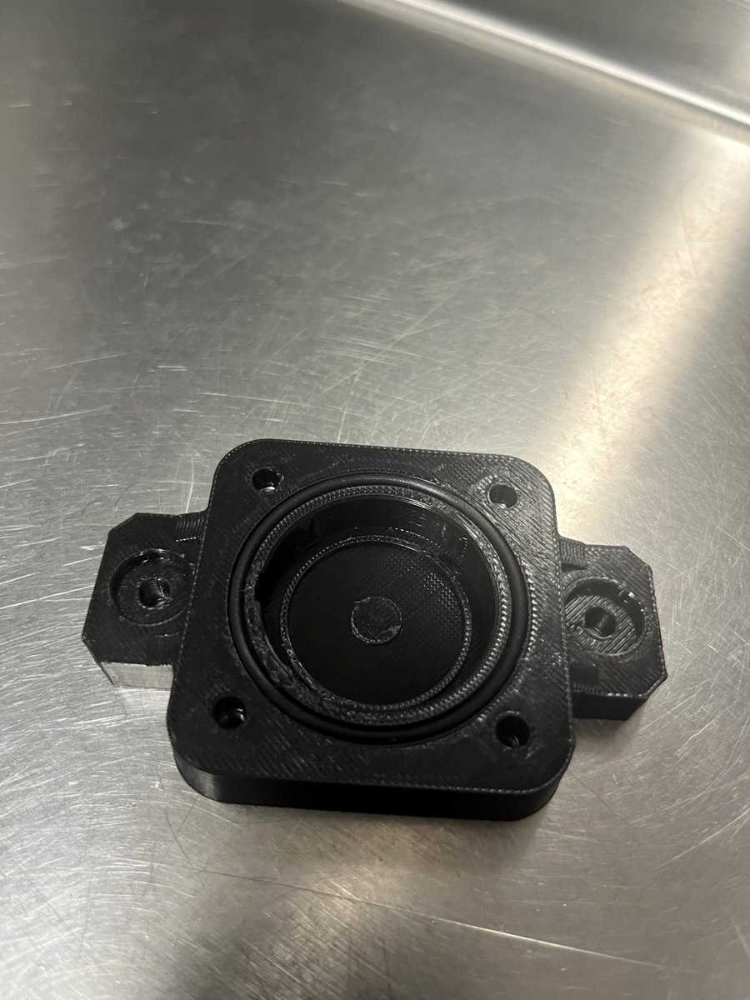
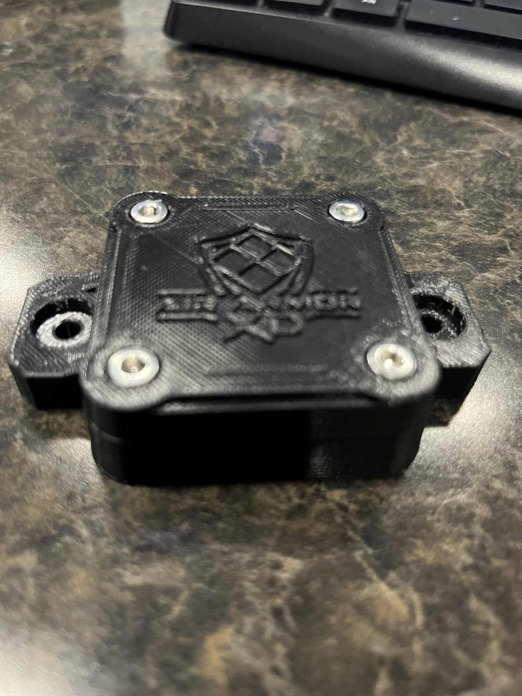

Purpose-built protection for Apple AirTag®—designed for trailers, equipment, off-road vehicles and other demanding tracking applications.

A compact enclosure surrounds the tracker with a rigid shell, mechanical fasteners and a replaceable sealing interface while keeping the tracker accessible for service.
Designed to help protect the enclosed tracker from water, mud and debris.
Mechanical fasteners create a secure, serviceable closure.
Integrated mounting ears allow attachment to suitable equipment and mounting surfaces.
The internal pocket locates the AirTag inside the enclosure.
Compact geometry helps keep the tracker discreet.
Open the enclosure when battery replacement or inspection is needed.



Apple, AirTag and the Apple logo are trademarks of Apple Inc. “Gasket-sealed” describes the enclosure design and is not an IP-rating claim.